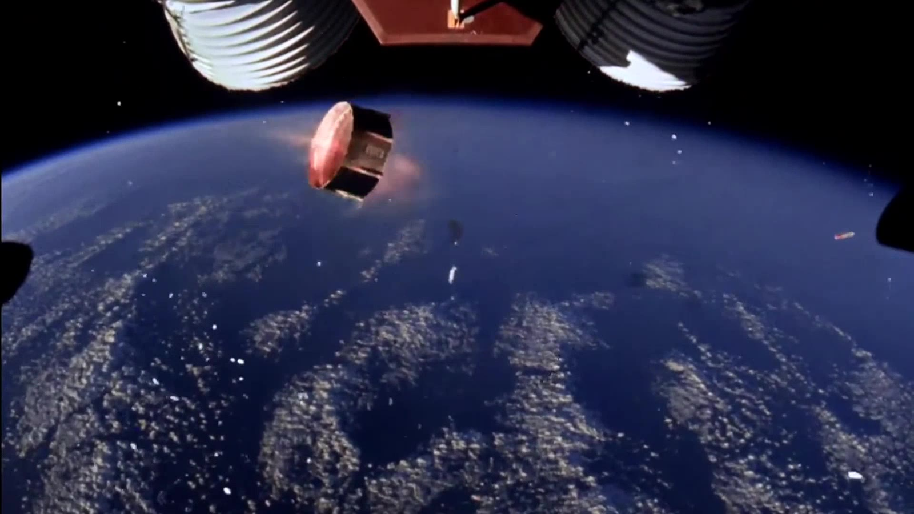

3M 便利貼的奇蹟：一個「失敗膠水」如何席捲全世界？
共 49 幕分鏡 · 預估成片總長度：12分28秒 (748.1s) · 自動生成於 20261023_3M
🎞️ 各場景分鏡與語音審查
001_shot_1 · 大家好
時長: 10.85s

002_shot_2 · 這個一年在全世界狂賣數百億張的文
時長: 14.98s

003_shot_3 · 時光倒流回1968年全世界正深陷
🖼️ 畫中畫 PiP
時長: 11.96s
無畫面
疊加參考圖 (PiP)：

004_shot_4 · 位於明尼蘇達州聖保羅的三愛姆公司
時長: 9.77s

005_shot_5 · 當時軍方與航太工業極度渴望能承受
時長: 11.97s

006_shot_6 · 然而在一連串精密複雜的高分子聚合
時長: 9.77s

007_shot_7 · 這堆乳液在顯微鏡下根本沒有形成牢
時長: 9.37s

008_shot_8 · 他把這種膠水塗在紙上拿手輕輕一碰
時長: 16.14s

009_shot_9 · 在那個崇尚堅不可摧的重工業時代這
時長: 17.7s

010_shot_10 · 當時所有同事都在私下勸他趕緊把這
時長: 10.37s

011_shot_11 · 但席爾瓦博士卻像著了魔一樣看透了
時長: 22.59s

012_shot_12 · 然而商業現實的殘酷遠遠超出了科學
時長: 17.66s

013_shot_13 · 你現在端著一罐一撕就掉的膠水去各
時長: 10.57s

014_shot_14 · 唯一保住他飯碗的是公司傳奇董事長
時長: 12.57s

015_shot_15 · 但在長達整整五年的時間裡席爾瓦博
時長: 22.39s

016_shot_16 · 他創造出了一個堪稱奇蹟的答案但全
時長: 13.13s

017_shot_17 · 商業歷史上最偉大的轉折點往往不是
時長: 10.17s

018_shot_18 · 1974年某個莊嚴肅穆的星期天北
時長: 17.7s

019_shot_19 · 為了在主日崇拜快速翻頁弗萊在厚重
時長: 17.58s

020_shot_20 · 就在這狼狽不堪的瞬間一道思想的閃
時長: 12.12s

021_shot_21 · 弗萊頓時領悟了一個道理誰說書籤必
時長: 16.26s

022_shot_22 · 隔天清晨弗萊激動地衝進席爾瓦的實
時長: 18.78s

023_shot_23 · 然而當你以為看穿了需求財富大門就
時長: 18.02s

024_shot_24 · 看似簡單的便利貼背後隱藏著極其陰
時長: 17.58s

025_shot_25 · 雪上加霜的是三愛姆的精密機械部直
時長: 23.19s

026_shot_26 · 走投無路的弗萊只能利用業餘時間把
時長: 12.9s

027_shot_27 · 在無數個深夜的測試中弗萊好幾次差
時長: 10.97s

028_shot_28 · 1977年三愛姆市場部信心滿滿地
時長: 17.37s

029_shot_29 · 在普通顧客眼裡一包普通的裁切白紙
時長: 12.41s

030_shot_30 · 冰冷的市場調查報告直接將它定性為
時長: 17.78s

031_shot_31 · 到底是這項技術本身有缺陷還是傳統
時長: 13.97s

032_shot_32 · 當你的產品具有顛覆性的互動屬性時
時長: 19.98s

033_shot_33 · 1978年商業史上最傳奇的一場特
時長: 13.29s

034_shot_34 · 他們完全繞過了所有的傳統文具批發
時長: 12.64s

035_shot_35 · 這招堪稱直擊現代官僚體系心臟的最
時長: 10.73s

036_shot_36 · 主管要簽字秘書順手貼一張提示有文
時長: 12.77s

037_shot_37 · 短短幾週之內波伊西市所有大公司的
時長: 11.97s

038_shot_38 · 波伊西地區的二次回購率竟然高達不
時長: 17.18s

039_shot_39 · 三愛姆高層看著這份狂暴的財務報表
時長: 14.97s

040_shot_40 · 一場狂暴的黃色海嘯在短短兩年之內
時長: 19.12s

041_shot_41 · 它不再只是一張微不足道的辦公便條
時長: 13.37s

042_shot_42 · 大腦天生對未完成的事情存在難以忍
時長: 19.38s

043_shot_43 · 更絕妙的是當你處理完一項繁雜的工
時長: 17.54s

044_shot_44 · 席爾瓦和弗萊最初只是想解決書籤滑
時長: 14.17s

045_shot_45 · 到了二十一世紀初追求極端零缺陷的
時長: 21.46s

046_shot_46 · 大家突然驚醒如果回到那個追求百分
時長: 20.78s

047_shot_47 · 商業歷史上最暴利的傳奇神話恰恰孕
時長: 12.49s

048_shot_48 · 這位名下擁有近四十項發明的老人在
時長: 12.9s

049_shot_49 · 今天演算法與效率正在把我們每個人
時長: 24.79s